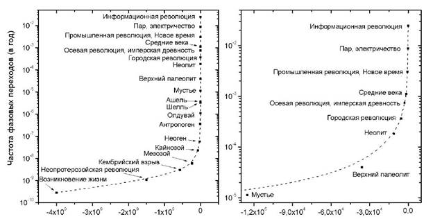

Страницы авторов "Тёмного леса"
Пишите нам! temnyjles@narod.ru
Исследовательская и просветительская деятельность Римского клуба, образованного группой видных общественных деятелей и учёных в 1968 году, существенно повлияла на формирование экологического сознания в различных слоях западного общества. Вместе с тем в публикациях его приверженцев человечество неизменно представлялось только как инвазивный элемент биосферы, действующий вопреки "законам природы" и так неумолимо приближающий собственную гибель. Привычной установке следует и коллективный доклад, посвящённый 50-летнему юбилею Клуба. В предлагаемом комментарии рассказано о концептуальных и практических издержках такой ("биоцентрической") установки, по мнению автора, уже безнадёжно устаревшей. Стержень экологической философии XXI века составляет концепция антропосферы - качественно более сложной системы, в которой человек становится творческим созидателем, а сознание - управляющим звеном. Соответственно, стратегическая перспектива эволюции видится не в восстановлении "естественных" кондиций, а напротив, в углубляющейся и расширяющейся трансформации разумом природных процессов.
Ключевые слова: Римский клуб, юбилей, доклад, эволюция, биосфера, антропосфера, синергетика, Сингулярность, кризис, катастрофа, катастрофофилия, образ врага, разум, смысл жизни, космос, религия, наука, будущее.
Пятидесятые - семидесятые годы прошлого века ознаменовались беспримерным по плотности сдвигом в социальном мышлении. Грозное словосочетание глобальный кризис первоначально несло в себе исключительно военно-политическую коннотацию: мир балансировал на грани ядерной катастрофы. Но о том, что уже к началу 1960-х учёные, а за ними и политики стали задумываться также над темами, которые сегодня можно отнести к сфере "экологии" (само слово ещё оставалось узкоспециальным биологическим термином), свидетельствует один из прорывных документов эпохи - Договор о запрете ядерных испытаний в трёх средах. Даже Франция и Китай, отказавшиеся его подписать, вынуждены были в последующие годы последовать его требованиям под давлением меняющихся общественных настроений.
Серия чудом сглаженных в 1960-х годах военно-политических обострений дала повод для надежды, что тотального конфликта удастся избежать. Но тревожный образ исторического тупика привил западной публике вкус к глобальному прогнозированию с явно пессимистическим оттенком: "А что будет, если Третьей мировой войны не будет?".
Идеи образованного в 1968 году Римского клуба были созвучны таким тревогам, и первые же доклады вызвали широкий резонанс в Западной Европе, Северной Америке, Восточной Азии, а позже и в СССР. Ключевой тезис был прост: человечество с его больными амбициями - только один из элементов биосферы, нарушивший законы единой системы, а потому рискующий быть отсечённым как чужеродный. Книги и статьи запестрили сравнениями цивилизации с "взбесившимся муравейником" и прочими садомазохистскими самооценками. Наиболее умеренной стала аллегория "Земля - космический корабль" с ограниченным запасом ресурсов на борту, которые неумолимо приближаются к исчерпанию. Шаблоны "общества потребления" разрушались настойчивыми указаниями на то, что при грядущем обнулении ресурсов даже миллионные капиталы не обеспечат удовлетворение минимальных жизненных нужд.
Первые доклады Римскому клубу, совпавшие по времени с обозначившимся нефтяным кризисом, послужили импульсом к переоценке ценностей линейного прогресса, а также к пересмотру технологических стратегий. В последующем было отмечено, что, если бы активность человечества оставалась такой же "экологически грязной", как в 1950-х годах, то в 1990-х жизнь на Земле стала бы невыносимой [Ефремов 2004].
Без сомнения, "биоцентрические" идеи и популяризаторская активность Клуба сыграли важную роль в успешном завершении XX века. Но скоро обнаружилась и оборотная сторона представления о человечестве как равноценном элементе биосферы. Прежде всего было обращено внимание на чрезмерную численность населения Земли, и пробудившийся призрак Мальтуса принялся бродить по миру. Концепции "устойчивого развития" (sustainable development) часто походили на врачебные рекомендации по продлению агонии обречённого пациента, причём акцент во многих версиях ставился на необходимости форсированной депопуляции.
"Аист обогнал плуг", - писал автор бестселлера "Демографическая бомба" П. Эрлих, призывая к "контрольному отстрелу аистов" вплоть до принудительной стерилизации индийцев, имеющих трёх и более детей. Влиятельная американская газета посвятила целую полосу своеобразной "социальной рекламе". На странице помещена фотография младенца, а под ней текст: "Угроза миру" - и... подписи всемирно известных учёных. "Если человек угрожает природе, то надо уничтожить человека" - откровенничали экологи-экстремисты (цит. по [Кацура 2000: 153]).
Насчёт добровольной самоликвидации, принудительной стерилизации и "контрольного отстрела" господа, конечно, погорячились, но сам вывод о губительной перенаселённости планеты ставил на повестку дня оперативные вопросы: как, на сколько и кого следует сокращать? Уважающие себя аналитики не призывали к войне, а в ряде случаев даже оговаривали, что это средство "недостаточно эффективно". Поэтому в данном пункте концепции либо зияли красноречивые пустоты, либо авторы откровенно признавали проблему неразрешимой. Проекты, связанные с ростом образования и благосостояния в целях снижения рождаемости в Африке, Азии и Южной Америке, откладывали решение в долгий ящик - а ведь экологи предписывали радикальную и срочную депопуляцию. Горячие головы предлагали самые экзотические проекты. Например, биохимически регулировать пол зародышей так, чтобы мальчики и девочки рождались в соотношении 9 к 1 - тогда в следующем поколении рождаемость радикально уменьшится. Или подмешивать в пищу, в воду, даже распылять в воздухе вещества, многократно снижающие вероятность зачатия.
Казалось бы, при нерешённости первого, "технического" вопроса следующие два становятся пустыми абстракциями. Но как раз они вызвали острые противоречия.
Учёные труды, газетно-журнальные публикации и речи политиков наполнились различными вариантами идеи "золотого миллиарда". Приводились также расчёты, доказывающие необходимость десятикратного, стократного и даже шестисоткратного (!) уменьшения населения Земли.
За счёт кого же? Поначалу само собой разумелось, что необходимо срочно сокращать бурно растущее население "третьего мира". Но на местах нашлись доморощенные умники, которые, признавая важность депопуляционных мер, доказывали, что это касается соседей по планете, тогда как в их собственной стране соотношение населения и ресурсов "соответствует концепции золотого миллиарда".
Но и идеологически беспристрастные учёные испытывали неловкость от самой постановки вопроса о спасении планеты путём её избирательного освобождения от "человеческого груза". В пику адептам эко-расистских теорий были приведены расчёты, демонстрирующие, что средний гражданин США потребляет в 150 раз больше энергии, чем житель Боливии, Эфиопии или Бангладеш, и на протяжении жизни наносит в 280 раз больший ущерб природе, чем житель Чада или Гаити [Кеннеди 1997]. Не следует ли из этого, что для сохранения ресурсов Земли целесообразнее было бы "избавить" её от населения развитых стран?..
Всё более противоречивыми становились и наиболее респектабельные произведения экологов-глобалистов. В первом и самом ярком докладе, представленном Римскому клубу в 1972 году [Медоуз и др. 1991], обстоятельно просчитано, через сколько десятилетий будут исчерпаны энергетические и прочие необходимые для человеческой жизнедеятельности ресурсы планеты при сохраняющемся росте потребления, и это сыграло неоценимую роль в экологическом просвещении государственных деятелей, предпринимателей и широкой публики. В 2004 году авторы опубликовали новую монографию, где исходные модели сопоставлены с реальным ходом событий [Медоуз и др. 2007]. На сей раз она удивила логическими нестыковками.
Так, для начала указано, что "в последний раз человечество находилось на уровне самоподдержания в 80-х годах XX века. В настоящее время мы за пределами на 20%". В частности, "общемировое производство зерна больше не в состоянии поддерживать рост населения" (по сведениям из других источников, зерна производится так много, что для поддержания цены некоторые компании бессовестно перерабатывают его в этанол - но это к слову). Пока, правда, "понимание проблемы во всём мире удручающе слабое", но "примерно через 10 лет (т.е. в 2014 году - А.Н.) последствия выхода за пределы будут уже хорошо заметны, а через 20 лет общество открыто признает факт выхода за пределы" (с.18-28).
Впрочем, отчаиваться не стоит, так как "последствия выхода за пределы поправимы". Надо только "вернуть мир в область самоподдержания" (с.19) и "резко уменьшить численность населения до уровней, которые способна выдержать окружающая среда" (с.18). Однако "переход к устойчивому развитию должен быть естественным и постепенным", и на него "уйдут века" (с.290). Действительно, если в каждой семье будут рождаться "не более двух детей" (с.287), то потребуются века, чтобы население Земли сократилось до облюбованного миллиарда. Тем более что пока население продолжает расти.
Но откуда века в запасе у человечества, уже вышедшего далеко за пределы возможностей планеты и пока не догадывающегося об этом? И что это за пределы, которые допустимо пересекать и через века в них возвращаться? Не логичнее ли признать, что цивилизация окончательно катится в пропасть? Или речь всё-таки идёт о ситуативных ограничениях, которые зависят от ряда переменных параметров, и модель, принимающая эти переменные за константы, даёт на выходе недостоверный прогноз?
Авторы обещали опубликовать последующие результаты в 2014 году, и было любопытно узнать, насколько же теперь перекрыта несущая способность планеты. В 2013 году, работая над книгой [Назаретян 2017а], я смог списаться с руководителем коллектива проф. Д. Медоузом и узнал от него, что новой книги не будет; главная причина - картина вырисовывается слишком мрачная, точка невозврата пройдена и цивилизация необратимо соскальзывает в пропасть. На уточняющий вопрос профессор ответил, что не считает нашу переписку конфиденциальной, мнения своего не скрывает и не возражает против его обнародования, поскольку "всё это уже не имеет значения".
Медоуз разочарован в неразумном человечестве, нимало не подвергая сомнению исходную модель. Но стоит принять за основу постулат о том, что человечество есть равноценный элемент биосферы, - и дальнейшие выводы следуют с неумолимостью арифмометра, прикрываемой более или менее застенчивыми оговорками. Не обойтись без намёка на то, что "элемент" этот аномальный, что эффекты его активности исключительно деструктивны и коль скоро люди не желают "жить по законам природы" (эта шальная формулировка десятилетиями кочует по экологическим текстам), им нет места на планете.
По законам природы - значит, биологически "некондиционные" младенцы, равно как больные, покалеченные и стареющие "особи" должны быстро погибать, а между "популяциями" должна вестись бескомпромиссная борьба за экологическую нишу. И, разумеется, нас должно быть несравненно меньше. Миллиард, сто, десять миллионов - всё это полумеры. Например, С.П. Капица [1999], решительно возражая против такой постановки вопроса, рассчитал, что человечество превысило вместимость экологической ниши для животных соответствующего размера и типа питания на пять порядков величины. Так что, строго говоря, "по законам природы", количество одновременно живущих на Земле людей должно ограничиться десятками тысяч.
Поэтому, если говорить без обиняков, в биоцентрическом контексте люди выглядят таким же элементом биосферы, как раковые клетки - элементом поражённого ими организма. И когда агент Смит из культового фильма "Матрица" заявляет, что "человечество - раковая опухоль на теле планеты", это не пародия и не гротеск, а общее место.
Об отрезвляющей роли, какую сыграли их экстраполяционные модели, единомышленники Медоуза скромно умалчивают, продолжая сетовать на непонятливое человечество, по существу лишённое ими всякой стратегической перспективы. Между тем предельные модели мальтузианского типа шли вразрез с реалиями развивающихся технологий и опровергались системными расчётами, учитывающими большее число параметров. Теория самоорганизации (синергетика) подсказала, что внешние пределы не заданы раз и навсегда, но опосредованы переменными факторами, которые, в свою очередь, определяют творческие возможности эволюции. Было показано, что в истории общества, а задолго до появления людей в истории природы "пределы самоподдержания Земли" пересекались многократно и бесповоротно.
Наконец, геофизики обратили внимание на то, что появление человека застало "последние геологические секунды" умирающей биосферы. В последние 100 млн. лет вулканическая активность стареющей Земли снижается, а с ней сокращается наполнение атмосферы CO2 - источником репродуктивной способности биоты. Если бы было возможно "избавить" планету от людей вместе со всеми продуктами их деятельности (о чём грезят самые отчаянные экологи), репродуктивность биоты свелась бы к нулю через 3 - 4 млн. лет [Будыко 1975]. Поскольку же запасы атомного, химического и биологического оружия, а также сырья, накопленного для опасных производств, "удалить" ещё труднее, чем самих людей, то всё это без профессионального пригляда непременно "рванёт", что делает будущее биосферы без человека ещё более плачевным...
Но приверженцы Римского клуба продолжают отстаивать примат биосферы и её законов в социоприродных отношениях. Это отражено и в докладе, посвящённом полувековому юбилею Клуба и выражающем его консолидированную позицию: кроме двух титульных авторов, в книге указаны 34 соавтора [von Weizsaecker, Wijkman 2018]. Книга впечатляет обстоятельностью и многомерностью, даже её заглавие построено на умышленной игре слов. Ключевое слово Come on! может быть переведено как "Вперёд". Лейтмотив предлагаемого комментария составляет попытка переставить акценты в вопросе о векторах развития: ""Вперёд" - это куда?"
Работа Римского клуба была изначально ориентирована на коллективность, системность и междисциплинарность, но однозначная установка на биоцентризм практически исключила из числа его авторов профессиональных историков, антропологов и психологов. Поэтому предложенные модели, лишь мельком касаясь нелинейности эволюции и неуклонно возраставшей в прошлом роли ментальных факторов, соответственно, недооценивали паллиативное пространство будущего. Всё это заметно и при знакомстве с юбилейным докладом.
Уже его отправной тезис удивляет пренебрежением к хрестоматийным фактам: человеческая цивилизация сформировалась в условиях "пустого мира", т.е. мира неограниченных ресурсов; только теперь мир впервые стал "полным" и его ресурсы приходят к исчерпанию (p.9-11 и далее). Ни минуты не сомневаюсь, что уважаемым учёным знакомы факты, приведённые в следующем разделе данного комментария. Но они по традиции игнорируют то, что никак не складывается с их постулатами, и тем самым исключают вопрос об исторических прецедентах, а соответственно, об общих механизмах обострения и разрешения эволюционных кризисов, в том числе глобальных. Иначе бы векторы и сценарии будущего виделись несколько иначе.
Авторы отмечают, что в нашу эпоху деятельность человека стала определяющей для планеты, и приводят наглядные иллюстрации. Например, сегодня 97% массы позвоночных на Земле приходится на людей и скот и лишь 3% составляют все остальные, от летучих мышей до слонов (p.16). Поскольку же это обстоятельство приводится вкупе с подъёмом авторитаризма и фундаментализма, глобальным потеплением и угрозой ядерного конфликта, читатель должен понять, что растущее влияние человека - тенденция сугубо негативная.
Легко узнаётся "левая" риторика про 800 млн. голодающих. Достоверность таких расчётов у многих аналитиков вызывает сомнение (см., напр., [Майло 2011]), но дело даже не в числах. Во-первых, посмотрев на ситуацию в исторической динамике, мы убеждаемся, что всего пару столетий назад, когда на Земле жило в 9 - 10 раз меньше людей, почти все они подвергались регулярной угрозе голода, и ещё в середине XX века "голодом" называли недоступность продуктов питания, а не его "несбалансированный рацион", как это часто понимают теперь. Во-вторых, голод сегодня чаще всего обусловлен не отсутствием пищи, а трудностями её доставки - из-за войны, блокады, коррупции и т.д. Здесь, как и в ряде других случаев, речь идёт о вчерашних дефицитах.
Но, поскольку одновременно с сотнями миллионов голодающих 2 млрд. людей страдают от избыточного веса, такое несправедливое мироустройство даёт основание для суровой критики капитализма, его финансовых структур и критериев. Стандартный набор филиппик в адрес рыночного хозяйства представлен как развенчание "устаревшей философии" (p.63 и далее), ориентирующей на конкуренцию и прибыль и построенной на неверном истолковании наследия великих английских мыслителей.
Историкам науки будет любопытно проследить, как Адам Смит под пером авторов уподобился социалисту, а Чарльз Дарвин оказался приверженцем ограничения конкуренции и защиты слабых видов. Заметим, хотя Смит начинал карьеру как моралист, суть его учения в том, что общественной пользе служит ориентация на личный интерес: "невидимая рука рынка" самостоятельно выстраивает человеческие отношения по критериям справедливости, а корректирующее вмешательство общества или государства способно только нарушить этот механизм. Ещё более странной выглядит трактовка Дарвина в духе современной политкорректности.
Известно, что на раннем этапе творчества Дарвин следовал теории Ж.Б. Ламарка, согласно которой в вездесущей конкуренции побеждают самые крупные и сильные особи. Но бурно развивавшаяся палеонтология давала всё больше поводов к сомнению: например, птеродактиль явно крупнее воробья. Под давлением фактов Дарвин готов был отказаться от эволюционной теории (это было не последним его разочарованием), однако вовремя познакомился с трудами Г. Спенсера, где использован более тонкий фактор конкуренции - приспособленность. Акцент на выживании наиболее приспособленного (the fittest) сделал теорию устойчивее к критике.
Наверное, даже удачно вышло, что ни сам Дарвин, ни кто-либо из его современников не заметили образовавшегося в итоге логического круга: критерием выживания объявлена приспособленность, а критерием приспособленности - выживание. То, что коренной порок дарвиновой теории был замечен лишь спустя десятилетия, в XIX веке спасло эволюционное мировоззрение.
Едва ли можно было найти более успешное концептуальное решение, пока не сформировались наука генетика, общая и кибернетическая теория систем, системная экология и теория самоорганизации. Новое синтетическое видение естественного отбора сделало понятнее жизнеспособность новых видов на начальной стадии адаптации и эволюционную востребованность "слабовредных мутаций". Но оригинальные тексты Дарвина полны свидетельств того, насколько чужды ему ссылки на ограничение конкуренции или защиту слабых. Великий эволюционист не только не наделял естественный отбор какими-либо сентиментальными сдержками, но и не предполагал вмешательства культуры в этот жестокий закон. Приведу только один характерный пассаж.
Объясняя, почему не удаётся обнаружить переходные формы между обезьяной и человеком, Дарвин ссылался на последовательное истребление отстающих популяций прогрессивными и безоговорочно распространял тот же механизм на современное ему общество: в ближайшие столетия "цивилизованные человеческие расы почти наверное уничтожат и вытеснят в целом мире дикие расы" [Дарвин 1953, с.266]. Под первыми он подразумевал "кавказское племя", т.е. европеоидов, а под вторыми - африканцев, австралийцев и т.д.
О том, что авторы доклада вольно обращаются и с концепциями современных учёных, могу судить, опять же, по хорошо знакомым мне сюжетам. Так, развенчивая "заносчивый оптимизм" технологов, они однозначно привязывают идею грядущей "Сингулярности" к "закону Мура" и соглашаются с экспертами, считающими, что действие последнего ограничится 2020 - 2025 годами (p.48).
Напомню, закон Мура - эмпирическое обобщение, сформулированное в 1965 году: ёмкость элементарного блока памяти (соответственно, скорость переработки информации) ЭВМ удваивается со средним периодом в 18 месяцев. Когда и как иссякнет эта тенденция, вопрос спорный, и можно сослаться на других компетентных экспертов, связывающих дальнейший экспоненциальный рост с квантовыми компьютерами и прочими инновациями [Ladd et al. 2010; Каку 2013; Панов 2014]. Но дело в том, что прогнозируемая Сингулярность имеет косвенное отношение к закону Мура.
Сингулярностью в математике называют точку на гиперболической кривой, в которой значение функции превращается в бесконечность. Применительно к исторической перспективе это понятие впервые использовал выдающийся математик Дж. фон Нейман: "Всё ускоряющийся прогресс технологий и непрекращающиеся изменения в жизни людей... очевидно, приближают историю нашего вида к какой-то фундаментальной сингулярности, после которой знакомый нам человеческий мир не может продолжиться" (цит. по [Eden et al. 2012: 4]). Это было сказано в 1950-х годах, когда не было известно ни об обобщениях Г. Мура, ни о позднейших расчётах, показавших, что ускорение эволюционных процессов продолжается в строго логарифмическом режиме уже миллиарды лет. Одним из аналитиков, проведших такие расчёты, был программист Р. Курцвейл, прогноз которого авторы и свели к закону Мура. Хотя надо признать, что Курцвейл дал повод для непонимания, не проведя отчётливых различий между эволюционной и "технологической" Сингулярностью.
К этой теме мы далее вернёмся, а пока отметим, что в докладе предлагается многосторонняя программа социалистического переустройства путём взаимных договоров, просвещения и убеждения. Сократить рождаемость, обеспечить баланс между мужчинами и женщинами, между общим благом и индивидуальной автономией - всё это само собой. "Новая философия" видится в освобождении гуманизма от антропоцентризма и объединении науки с религией. "Прогресс" не следует считать самоценным, экономика должна стремиться к устойчивости, а не к росту, к общему благу, а не к частной выгоде; в итоге на смену эксклюзивному владению придёт модель услуги и взаимного использования...
Каждый элемент программы, долженствующей привести к планетарной гармонии, заслуживает особого обсуждения экономистами и социологами. Но вот беда: прогрессивные изменения и в истории биосферы, и в истории общества происходили не по чьему-либо желанию - это всегда был системный выбор меньшего из зол. Альтернативой в каждом случае становились более или менее стремительная деградация и саморазрушение, но и "прогресс", со своей стороны, оплачивался тяжёлыми жертвами и потерями. В наше время чувствительный индикатор, позволяющий отличать научный прогноз от очередной утопии, - полнота представления цены, какую придётся заплатить за успешное решение той или иной кардинальной проблемы.
И в жизни природы, и в жизни общества действительно бывают периоды, когда мир, по терминологии обсуждаемого доклада, можно назвать "пустым" для конкретной популяции, вида, социума и даже биоты в целом. Применительно к локальным ценозам это описано простым колебательным контуром "волки - зайцы" (модель Лотки - Вольтерра). С сокращением популяции волков из-за бескормицы увеличивается популяция зайцев, так что для выживших волков наступает пищевое раздолье. Длится оно недолго, так как рост волчьего поголовья ведёт к истощению потенциальной добычи - и мир опять становится "полным". Устойчивость экосистемы обеспечивается многообразием трофических переплетений, причём каждая популяция регулярно переживает кризисы, которые чаще всего разрешаются по обычной модели.
Сразу заметим, ресурсное изобилие обеспечивает линейную экспансию (популяции, вида, экосистемы или социума) и не требует качественных изменений. Последние становятся востребованными в кризисных фазах, когда естественно возобновимые ресурсы, включая территории для миграции, близки к исчерпанию. В ряде случаев такие кризисы принимали глобальный характер - по реальному масштабу или по эволюционному значению - и оборачивались драматическими скачками в планетарной эволюции. "Драматическими" - потому что перестройки в каждом случае сопровождались интенсивным вымиранием доминировавших популяций (до появления человека с лица Земли исчезли более 99% существовавших видов), а в последующем и разрушением социумов. Кратко обозначу переломные фазы в истории биосферы и затем общества по книге [Назаретян 2017а], опустив детали и подробную библиографию.
Согласно палеонтологической летописи, первый в истории Земли глобальный кризис, спровоцированный не внешними факторами (космические, геологические катаклизмы и т.д.), а собственной активностью биоты, случился 1.5 млрд. лет назад. Биота была представлена преимущественно цианобактериями, анаэробными фотосинтезирующими прокариотами, отходы жизнедеятельности которых - свободный кислород - на протяжении 2.5 млрд. лет раннепротерозойской эры накапливался в атмосфере планеты. В итоге атмосфера приобрела столь выраженное окислительное свойство, что стала губительной для основного носителя жизни - и началась массовая гибель цианобактерий.
Далее, как подсказывают модели синергетики, могло начаться стремительное разрушение примитивной биосферы или "зависание" системы по схеме колебательного контура между атомным составом атмосферы и численностью микроорганизмов. Но реальные события развивались по иному сценарию. К тому времени успели сформироваться простейшие аэробные организмы (поглощающие кислород и выделяющие углекислый газ), для которых теперь сложились благоприятные условия. Начав быстро размножаться, они приобрели ведущую роль в развитии жизни, и радикально усложнившаяся биосфера достигла устойчивости на более высоком уровне неравновесия с физической средой.
Заметим, первые аэробы формировались вследствие "слабовредных мутаций" и, по-видимому, не играли заметной роли в раннем протерозое, составив то, что в синергетике называется избыточным разнообразием. Если система в период экстенсивного роста достаточно "либеральна", чтобы допустить сохранение актуально бесполезных элементов и вариантов поведения, то в кризисной фазе из них черпается резерв для эффективной перестройки с достижением новой устойчивости. Таковыми и стали аэробы, обеспечившие неопротерозойскую революцию.
Фазовые переходы в последующей истории биосферы реализовались по сходной причинно-следственной модели. Долгое время палеонтологи ориентировались только на поиск внешних по отношению к биосфере причин массового вымирания видов: падение метеоритов, извержение вулканов или колебание климата, но такие объяснения часто не выдерживали критики. Кроме того, выяснилось, что кризисы и катастрофы экзогенного происхождения исключают качественное усложнение, и сам факт прогрессивного развития системы после катастрофических событий свидетельствует о том, что они были спровоцированы исчерпанием резервов линейного роста. С экстенсивным развитием прежние антиэнтропийные механизмы, сделавшись чересчур затратными, оборачивались своей противоположностью - угрозой катастрофического роста энтропии. Такая причинная последовательность названа правилом отсроченной дисфункции.
Аргументом против экзогенного объяснения глобальных кризисов, катастроф и фазовых переходов стали также расчёты, проведённые независимо учёными Австралии, России и США и показавшие, что временны`е интервалы между такими событиями в истории Земли закономерно сокращались (см. далее). На протяжении 4 млрд. лет на планете дрейфовали континенты, сдвигались магнитные полюса, чередовались ледниковые и межледниковые эпохи, извергались мощные вулканы и падали крупные метеориты - а переломы в эволюции следовали, как по расписанию! Даже появление Homo sapiens с его "свободой воли" и вечными сумасбродствами не нарушило строгую последовательность.
Между тем американский антрополог Э. Уилсон неслучайно назвал человека эволюционной химерой. Уже 2.5 млн. лет назад первые представители рода Homo принялись усердно "нарушать законы природы". Прежде всего, научившись искусственно заострять галечные отщепы (чопперы) и крошить ими друг другу черепа, они нарушили этологический баланс между естественной вооружённостью и инстинктивным торможением внутривидовой агрессии, обеспечивающий жизнеспособность популяций. Мощные орудия убийства в сочетании с психологией безоружного от природы животного ("голубь с ястребиным клювом") обрекали молодой вид на самоистребление.
Каким образом популяции Homo habilis удалось выжить и начать новый, орудийный виток планетарной эволюции - отдельная и очень увлекательная тема. Здесь важнее то, что дальнейший антропогенез отчётливо ориентирован на удаление от естества: образ жизни и тело человеческих предков всё менее отвечали биологической сообразности. Органы пищеварения теряли способность переваривать сырое мясо, ослабевал защитный волосяной покров, дополнительные проблемы создавала непропорционально большая голова, а бипедия не только замедляла передвижение, но и, углубив расположение матки, сделала деторождение беспримерно тяжёлым и опасным для жизни матери. Столь "противоестественный" вектор эволюции мог быть задан не адаптацией к природе, а бескомпромиссной конкуренцией за уникальную экологическую нишу. Отстающие по орудийным возможностям, качествам памяти и оперативного прогнозирования, внутригрупповых отношений и коммуникативных способностей были обречены на гибель под давлением уже не природной, а прасоциальной среды. В итоге образовалась пропасть между высшими животными и человеком, подобной которой мы не находим на прежних стадиях эволюции: между живым и неживым веществом, растениями и животными, одноклеточными и многоклеточными организмами сохраняются переходные формы.
Первый антропогенный экологический кризис глобального масштаба произошёл на исходе верхнего палеолита, около 10 тыс. лет назад. Согласованные историко-демографические таблицы указывают, что население Земли достигло 7.5 млн. человек, и все они вели присваивающее хозяйство. Для стабильного пропитания одного охотника-собирателя требуется в среднем территория 15-20 км2; сопоставив этот показатель с доступной территорией планеты, мы убеждаемся, что даже количественно она была близка к истощению. Но в действительности ситуация складывалась ещё хуже. Развившаяся к тому времени "охотничья автоматика" - ловчие ямы, копьеметалки, луки со стрелами - повлекла за собой чудовищный "перепромысел" (overkill). Археологические данные демонстрируют, что число уничтожаемых животных явно превосходило питательные потребности. За последние тысячелетия палеолита исчезли многие породы и виды мегафауны.
Попытки объяснить экологическую катастрофу потеплением на границе между плейстоценом и голоценом опровергаются целым рядом сегодня уже бесспорных фактов. Так, все эти виды прежде успешно пережили не менее двадцати глобальных климатических циклов. К тому же, например, в Америке их вымирание предшествовало изменению климата, а на острове Врангеля мамонты жили ещё 4 тыс. лет назад, пока туда не добрались первые люди. Безудержная активность искусных охотников, не привыкших думать об отдалённых последствиях, стремительно превращала естественно возобновимые ресурсы в невозобновимые, а искусственно производить их люди ещё не умели. Население Земли в результате кризиса заметно сократилось.
Здесь в очередной раз напрашивается сценарий "зависания" эволюции по модели Лотки - Вольтерра. Но творческим решением, радикально изменившим ход событий, стал переход к оседлому земледелию и скотоводству. Считается, что в палеолите ритуальные практики типа закапывания лучших зёрен в качестве жертвоприношения или приручения животных оставались уделом жрецов, не играя хозяйственной роли ("избыточное разнообразие"), но в результате кризиса периферийные виды деятельности сделались ведущими. Так было обеспечено новое качество социоприродных, а с ними и межгрупповых отношений: с образованием многоплеменных сообществ (вождеств) люди, по замечанию антрополога Дж. Даймонда, "впервые в истории научились регулярно встречать незнакомцев, не пытаясь их убить".
Неолитическая революция увеличила несущую способность территорий в десятки, сотни, а с развитием ирригационного земледелия - в тысячи раз. А главное, "впервые вступив в сотрудничество с природой" (Г. Чайлд), люди начали формировать экосистемы качественно нового типа, где управляющим элементом становилось сознание. Они выдавливали за пределы своего мира "вредных" животных и "сорные" растения, устанавливая иные зависимости иерархического управления. Согласно общесистемному закону иерархических компенсаций, рост совокупного разнообразия обеспечивается унификацией несущих подсистем. Агроценозы неолита, сокращая видовое разнообразие и наращивая сложность системных связей, послужили зародышами будущей глобальной системы, которую учёные XX века называли пневматосферой (сферой духа), ноосферой (сферой разума) или более нейтральным термином - антропосфера.
С тех пор удельный вес ментальной составляющей в причинных цепях неуклонно возрастал. Соответственно, кризисы и катастрофы всё чаще провоцировались не внешними по отношению к человеческой деятельности обстоятельствами, а диспропорциями в развитии общественного сознания. Анализ конкретных эпизодов и его результаты обобщены в модели техно-гуманитарного баланса: чем выше мощь производственных и боевых технологий, тем более совершенные регуляторы необходимы для внутренней устойчивости системы.
Новые технологические возможности делали мир временно "пустым", т.е. ресурсы начинали казаться неисчерпаемыми. Это вызывало эйфорию, ощущение вседозволенности и безнаказанности - предкризисный синдром, сопровождавший агрессивное вторжение в окружающую среду, что рано или поздно исчерпывало природные или человеческие ресурсы. В итоге социумы, не сумевшие обуздать возросшую мощь технологий, подрывали природные и/или организационные основы собственного существования и последовательно отсеивались из эволюционного процесса. Продолжали же историю те, которым удавалось своевременно привести качество культурно-психологических регуляторов в соответствие с обретённым инструментальным потенциалом. Адаптация к новым технологиям превращала самые разрушительные из них в жизнесберегающий фактор, так что в длительной исторической ретроспективе прослеживается парадоксальный факт, подтверждённый независимыми расчётами: с ростом убойной мощи оружия и демографической плотности коэффициент кровопролитности общества (отношение среднего числа убийств в единицу времени к численности населения) нелинейно, но последовательно сокращался. В современных обществах западного типа этот показатель на несколько порядков величины уступает даже самым миролюбивым из племён охотников-собирателей.
Антропогенные кризисы сопровождали жизнь общества на всех континентах и на разных этапах истории. Они редко достигали масштаба, сравнимого с верхнепалеолитическим, но в ряде случаев и региональные кризисы приобретали глобальное значение по своим последствиям.
5.5 - 4 тыс. лет назад в районах Северной Африки, Ближнего и Дальнего Востока и позже (2 - 1.5 тыс. лет назад) Северной и Южной Америки более или менее независимо друг от друга возникли первые поселения городского типа, послужившие зародышами государственных образований. Антрополог Р. Карнейро и его последователи показали, что события во всех случаях развивались по сходному сценарию "экологического предела" (environmental circumscription). Государства образовались там и тогда, где и когда естественные свойства ландшафта исчерпали возможность экстенсивного развития, обеспеченного бронзовыми орудиями. Рост населения и потребления истощил плодородие почв, монотонное расширение сельскохозяйственных угодий зашло в тупик и силовая конкуренция между локальными вождествами приобрела отчётливый экономический характер. Выход из антропогенного кризиса достигался значительным усложнением социальной структуры, профессиональной и сословной дифференциацией и совершенствованием контрольных механизмов; централизованная координация массовых усилий позволила расширять ирригационные системы и т.д. Городская революция везде сопровождалась появлением той или иной формы письменности, в ряде случаев - первых правовых документов, а всё это способствовало как централизации управления, так и ограничению насилия внутри сообщества (переориентируя её во внешний мир).
Около середины I тысячелетия до н.э. в огромной ойкумене от Европы и Ближнего Востока до Индии и Китая распространилось производство стали, что прежде всего воплотилось в боевых технологиях. Стальное оружие, лёгкое, прочное и дешёвое, позволило вовлечь в военные конфликты всех дееспособных мужчин. Маленькие профессиональные армии бронзового века сменились массовыми армиями, резко увеличив кровопролитность сражений. Катастрофическая убыль мужского населения грозила крахом передовых обществ и востребовала новые ценности, нормы межгрупповых отношений, изменение целей и методов ведения войны. Переворот осевого времени ознаменовался появлением "философов", учивших милосердию, взаимопониманию и критическому мышлению, политиков и полководцев, считавших доблестью не число убитых врагов, а достижение победы с минимальными потерями, осваивавших эффективные методы разведки и коммуникативного воздействия. Государства, в которых таковые не появились (Египет, Вавилон, Ассирия, Урарту и др.), не смогли встроиться в новую историческую эпоху.
Европа позднего Средневековья оказалась в тисках тяжелейшего экологического и политического кризиса - экстенсивное развитие сельского хозяйства зашло в тупик. Вырубленные леса и загрязнённые водоёмы превратили европейцев XIV-XVIII веков, по выражению историка М. Коэна, в "самых бедных, голодных, болезненных и короткоживущих людей за всю историю человечества". Перенаселение вкупе с развитием огнестрельного оружия вновь сделало во`йны чрезвычайно кровопролитными. Ответом на вызовы эпохи стала индустриальная революция, повысившая удельную продуктивность производства и подготовленная очередным совершенствованием социальных ценностей и норм международных отношений (гуманистические доктрины в философии, идея исторического прогресса, Вестфальская политическая система и т.д.).
Распространение промышленного производства в очередной раз повысило демографическую вместимость планеты, но дальнейший рост населения и потребления вёл к новым напряжениям в сферах экологии и политики. Бурное развитие военных технологий внесло решающую лепту в обострение системного кризиса, который едва не обернулся планетарной катастрофой и в различных своих ипостасях всё ещё держит человечество в напряжении. Важным фактором смягчения кризиса стала информационная революция, способствующая существенному ограничению вещественных и энергетических затрат на удовлетворение продолжающих расти потребностей...
Так из хаоса амбиций, безумств и прозрений вырастал порядок фазовых переходов глобальной истории. Укрупняя масштаб, мы видим бесконечные изломы и зигзаги, пароксизмы насилия, разрушенные ландшафты и гибнущие цивилизации. Но в мелком масштабе открывается захватывающая картина преемственных изменений по сопряжённым векторам растущей инструментальной мощи, демографической плотности, организационной сложности и совершенствования культурной саморегуляции. Биосфера перерастала в антропосферу, где человечество с его мятежным духом, творчески осваивая опыт трагедий и тупиков, последовательно превращалось в системообразующий центр новой планетарной реальности. При этом динамика исторических событий с удивительной точностью следовала гиперболе ускорения эволюции, сложившейся задолго до появления человека.
Акцент на концепции антропосферы превращает человека из "инвазивного" вида-разрушителя в созидающего субъекта, что и отличает экологическую философию XXI века от "устаревшей" философии XX века. Бесспорно, культурные дисбалансы способны форсировать глобальное саморазрушение, заведя эволюцию в окончательный тупик, но, вместе с тем, только человеческое творчество способно обеспечить подлинную перспективу планетарной эволюции.
А теперь вернёмся к эволюционной гиперболе, неоднократно упоминавшейся ранее, и приведём одно из её графических изображений (рис.1).
|  | Рис.1. Гипербола ускорения эволюции (по А.Д. Панову). По горизонтали отложено время до финальной точки ускорения (см. далее). |
Логарифмический закон был впервые выведен экономистом и историком Г. Снуксом [Snooks 1996]. В 2005 году аналогичную зависимость одновременно описали Р. Курцвейл [Kurzweil 2005] и физик А.Д. Панов [2005; Panov 2005]. Авторы ничего не знали друг о друге, пользовались различными источниками и вычислительными средствами. Я использую преимущественно материалы российского учёного, поскольку его теоретический и математический аппарат наиболее отработан. Панов также обратил внимание на ещё одно любопытное обстоятельство: ускорение универсальной эволюции, локализовавшееся на Земле, началось задолго до её появления. Около 10 млрд. лет назад в недрах звёзд первого поколения были синтезированы и выброшены в пространство ядра тяжёлых элементов. Так сформировался новый механизм самоорганизации, связанный с конкуренцией за свободную энергию, и с ним замедлявшийся в прежние миллиарды лет процесс образования сложных структур начал ускоряться.
И, конечно, никто из первооткрывателей не удержался от соблазна экстраполировать полученную кривую в будущее. При всём многообразии авторских интерпретаций сам математический результат озадачил: около середины XXI века гипербола сворачивает в вертикаль, т.е. скорость эволюционных изменений устремляется к бесконечности, а интервалы между фазовыми переходами - к нулю! Это и было обозначено в литературе как Вертикаль Снукса - Панова или Сингулярность Курцвейла.
Вопрос о том, какая же предметная реальность скрыта за шокирующим формальным выводом, обсуждается учёными разных специальностей, для его изучения в США, Японии, России и других странах созданы университеты и научные центры. Тезисно излагая наши результаты, отмечу, что за ожидаемым пиком планетарной эволюции угадываются, как и в прежних переломных фазах, три возможных аттрактора (с веером сценариев в рамках каждого из них).
"Простой" аттрактор предполагает переход к нисходящей ветви истории с более или менее интенсивной деградацией антропо- и биосферы. Процесс может длиться от суток до тысячелетий. Наиболее затянутые сценарии связаны с "религиозным Ренессансом" и прочими симптомами грядущего провала передовых обществ в Средневековье, включающего угасание социальной памяти и реанимацию установок прошлого. Это действительно потребовало бы форсированной депопуляции (средневековое хозяйство не прокормит миллиарды людей) и "войны всех против всех" с неуклонным соскальзыванием всё далее вглубь тысячелетий. Трагифарсовый реверс будет дополнен теми же факторами, что и угасание биосферы, лишённой человека (см. выше): бесхозные остатки технологий XX века ускорят путь к конечному состоянию - термодинамическому равновесию, т.е. превращению Земли в "нормальное" космическое тело, не отягощённое ни разумом, ни биотой.
"Горизонтальный странный" аттрактор - зависание глобальной системы. Это может быть связано с отработкой механизмов долгосрочного жизнеобеспечения, потерей интереса к внешнему миру и перемещением социальной активности в виртуальную сферу. Вероятно, такая "эскапистская" цивилизация могла бы оставаться устойчивой длительное время, но рано или поздно пала бы жертвой универсального роста энтропии.
"Вертикальный странный" аттрактор - переход от планетарного цикла эволюции к космическому с распространяющимся влиянием разумной деятельности за пределы Земли. Как и положено "странному" аттрактору, связанные с ним сценарии выглядят наиболее фантастично. Насколько же они правдоподобны?
К 1980-м годам были накоплены исчерпывающие свидетельства того, что история антропосферы, включая её интеллектуальные и духовные параметры, составляет фрагмент преемственной эволюции Земли и Вселенной за почти 14 млрд. лет. Появились монографии, а затем и университетские курсы Мегаистории (Big History), представляющие интегральную модель прошлого - от Большого взрыва до постиндустриальной цивилизации. Параллельно создавались модели (синергетика, нелинейная термодинамика, теория хаоса и т.д.), объясняющие устремлённость "космологической стрелы времени" в сторону всё более сложных и неравновесных структур в контрасте с "термодинамической стрелой времени", предусматривающей необратимый рост энтропии.
Всё это заметно повлияло на мировоззренческие ориентиры. В теоретической физике XX века почти безраздельно господствовало убеждение в том, что культура и разум суть побочные эффекты (эпифеномены) слепой игры физических взаимодействий, неспособные играть сколько-нибудь значимую роль в событиях универсального масштаба и обречённые на бесследное исчезновение в океане вселенской энтропии. Характерно замечание лауреата Нобелевской премии Ст. Вайнберга [1981], что только понимание неизбежности конца придаёт "фарсу" человеческого существования оттенок "высокой трагедии".
К концу 1990-х настроения среди астрофизиков заметно изменились. В книгах и статьях авторитетных учёных распространены утверждения, что "наше присутствие во Вселенной представляет собой фундаментальное, а не случайное свойство бытия", а "сознание - более фундаментальная сущность, чем атомы", способное сыграть ключевую роль в образовании "живого космоса". Что "законы природы" принципиально не ограничивают диапазон разумного влияния на масс-энергетические потоки, и эра стихийной эволюции Вселенной сменится эрой управляемой эволюции, как это произошло в последние тысячелетия на Земле; вопрос только в том, будет ли в этом участвовать разум, сформировавшийся на нашей планете, или инициатива перейдёт к более успешным цивилизациям (см. [Дойч 2001; Rees 1997; Chaisson 2006; Дэвис 2011; Каку 2012, 2015; Smolin 2014] и др.). Потенциально беспредельная перспектива инженерного творчества была ещё раньше показана в гештальтпсихологии и эвристике: неуправляемые константы остаются таковыми в рамках определённой модели, и всегда можно творчески сконструировать метамодель, в рамках которой они превращаются в управляемые переменные [Duncker 1935].
На сочетании новейших моделей астрофизики, психологии, исторической социологии и общей теории систем построены и космологические гипотезы, объясняющие удивительное "молчание Космоса" (так называемый парадокс Ферми). Наше существование на Земле служит достоверным свидетельством того, что в каждом из фазовых переходов, сопровождавших эволюцию природы и общества, события, в конечном счёте, развивались в сторону вертикального аттрактора. Но из теории систем известен принцип имплементации, гласящий: всё, что может произойти, непременно происходит. Отсюда следует множественность эволюционных очагов, в которых реализуется многообразие тупиковых сценариев.
Сегодня накоплены сильные аргументы в пользу того, что простейшие организмы переносятся по космическому пространству метеоритами [Мазур 2010], причём метеоритная активность была очень интенсивной в период образования Солнечной системы. Показано также, что первые следы жизни на Земле предшествуют образованию океанов [Розанов 2009]. Возможно, она заносилась на нашу планету неоднократно, но угасала, не выдержав жёсткой метеоритной бомбардировки, и смогла надолго угнездиться только после того, как интенсивность бомбардировки ограничилась [Тайсон, Голдсмит 2017]. Но, судя по всему, вероятность того, что заселение той или иной планеты микроорганизмами запустит эволюционный процесс, достигающий уровня технологической цивилизации, мизерна. Вероятность же того, что такая цивилизация, справившись с внутренними дисбалансами, дорастёт до космически релевантного уровня, мы и вовсе не готовы оценить, не зная, до какой степени разум способен контролировать собственные импульсы. Роковую роль в судьбе Земной (и любой иной) цивилизации может сыграть неожиданное обстоятельство, состоящее в том, что диапазон потенциального управления внутренним миром несоразмерен диапазону управления внешним миром, а потому развивающийся разум рано или поздно уничтожает своего носителя. В лучшем случае можно предположить, что очень немногие (в пределе - только одна) цивилизации способны преодолеть этот барьер и вырасти из планетной "колыбели".
Не оттого ли "молчит" космос, что такого события в истории Вселенной пока не произошло? Если оно в принципе возможно, то станет ли Земля первой ласточкой? Эти вопросы будут так или иначе решены в ближайшие десятилетия, и, возможно, текущие события на нашей планете составляют фронтальный слой Метагалактической эволюции. Отсюда предупреждение известного японо-американского физика: "Поколение живущих сегодня людей можно смело считать самым значительным из всех, что когда-либо жили на нашей планете. Именно они должны определить, достигнет ли человечество... великой цели или будет ввергнуто в пучину хаоса" [Каку 2013: 503].
Сконцентрировавшись на дефицитах материального мира и сыграв важную роль в переоценке западным обществом потребительских установок, Римский клуб тем самым способствовал лучшему пониманию того, что объём доступных ресурсов определяется такими промежуточными переменными, как качество технологий, социальная организация и психология людей. Сопряжённые сдвиги в этих сферах и обеспечили эффективные ответы на вызовы эволюции во всех переломных эпохах.
В психологии социальной безопасности "вызов" - комплексная категория, включающая, в частности, такие параметры, как опасность и угроза. Угрозой считается всё, что способно нанести ущерб интересам субъекта. Опасность - величина, определяемая отношением угрозы к готовности субъекта ей противостоять. В XX веке общество смогло оценить и научилось справляться с наиболее явными угрозами типа ядерной войны, истощения пищевых, энергетических ресурсов и т.д. Как выше отмечено, голод сегодня обусловлен не недостатком пищи, а трудностями её доставки. Ожидается, что потребность в ископаемых энергоресурсах иссякнет значительно раньше самих ресурсов, а с развитием нанотехнологий и управляемого термоядерного синтеза энергетическая проблема может радикально переструктурироваться. И опасность ядерной войны сегодня минимизирована благодаря тому, что общество научилось справляться с этой угрозой.
Но XXI век принёс с собой новые угрозы, к которым духовная культура и общественное сознание не готовы. Так, уже во второй половине прошлого века начали размываться грани между состояниями войны и мира: после Нюрнбергского процесса, сделавшего слово "война" одиозным, самые кровопролитные конфликты происходили без её объявления (на фронтах "Холодной" войны погибли до 25 млн. человек). К этому добавилось размывание граней между боевыми, производственными и бытовыми технологиями, так что эпоху оружия массового поражения сменяет эпоха знаний массового поражения [Joy 2000]. Новейшие многофункциональные технологии становятся всё дешевле и доступнее и выскальзывают из-под контроля государств и правительств, попадая в руки неформальных групп и "продвинутых" пользователей интернета. Хотя, похоже, даже критерий "продвинутости" отходит на второй план: программист Э. Юдковски заметил, что "через каждые восемнадцать месяцев минимальный уровень IQ, достаточный для того, чтобы разрушить мир, снижается на один пункт" (цит. по [Pearce 2012, p.206]).
Это происходит в контексте снижающегося качества политического мышления самих государственных лидеров и радикализации массовых настроений. Характерный для 1950 - 1980-х годов акцент на задачах сохранения планетарной цивилизации, "новом мышлении" и "общечеловеческих ценностях" вытесняет отчётливо возросшая частотность апелляций к "возрождению духовных (читай - религиозных) традиций" и "национальным интересам". При этом опросы "патриотических" идеологов показывают, что они не готовы определить понятие нации в нынешнем переплетении расовых, этнических и конфессиональных составляющих, а интерес не отличают от таких понятий, как "амбиция", "импульс", "настроение", "выгода" и т.д. [Назаретян 2017б]. Риторика, переполненная пустыми клише, не оставляет места для понимания того, насколько абсурдны рассуждения о "национальном будущем" помимо будущего мировой цивилизации. Сочетание противоположных векторов в развитии инструментального потенциала и гуманитарных регуляторов образно выражено Уилсоном [2014: 14]: "Мы создали цивилизацию "Звёздных войн" - с эмоциями каменного века, общественными институтами Средневековья и технологиями, достойными богов".
То, что с развитием технологий возрастает потенциальный эффект индивидуальных действий и тем самым снижается внутренняя устойчивость общества (для обеспечения которой требуются всё более совершенные культурные самоограничения), - логическое следствие модели техно-гуманитарного баланса. В XXI веке крах антропосферы может произойти без "мировой войны" в понимании первой или второй половины прошлого века (заметно различавшихся между собой) и задолго до истощения каких-либо материальных ресурсов. "Мир кончается не взрывом, а всхлипом", - предрёк поэт Т. Элиот. Действительно, сегодня более актуальна перспектива планетарного "всхлипа", чем угроза "взрыва", которой удалось избежать полвека назад: по какому бы сценарию ни произошёл разрушительный переход к нисходящей ветви истории, его будет трудно заметить.
К 1980-м глобальная геополитическая система, ориентированная на два выделенных полюса, достигла максимума относительной устойчивости. Последующее ослабление и разрушение одного из них, не устранив инерцию двухполюсного мышления, создало опасную патологию полюсов. На одном полюсе - западные, особенно американские элиты, охваченные эйфорией всемогущества и вседозволенности, с заметно сниженной готовностью оценивать отсроченные последствия своих действий (типичный предкризисный синдром!). Другой, опустевший полюс стал быстро заполняться террористическими группами, которые десятилетиями пестовались конкурирующими сверхдержавами и "одичали", сделавшись ненужными прежним хозяевам. Этот системный эффект заполнения пустующей ниши неспецифическим видом хорошо известен из экологии - например, отстрелянных волков сменяют одичавшие псы, гораздо более опасные и для природы, и для людей.
Складывающаяся ситуация стала заметной уже к концу 1990-х. Тем не менее первое десятилетие нового века ознаменовалось историческим рекордом ненасилия: суммарное число жертв всех форм насилия составило около 500 тыс. чел. в год, при том что население Земли приближалось к 7 млрд. и ежегодное число самоубийств превышало 800 тыс. [Krug et al. 2002; Global... 2011]. Но во втором десятилетии события развиваются по неблагоприятному сценарию.
Политолог П. Слотердейк документально описал психическую эпидемию катастрофофилии - иррациональную тягу к "маленьким победоносным войнам", обуявшую миллионы европейцев накануне Первой мировой войны [Sloterdijk 1983]. Это характерный элемент предкризисного синдрома, складывающегося в массовом сознании в обстановке техно-гуманитарного дисбаланса. Хуже всего то, что сегодня фиксируется аналогичная симптоматика [Сидоров 2016]. С одной поправкой: если в начале прошлого века она ограничивалась Европой и отчасти Северной Америкой (доктрина В. Вильсона и т.д.), то теперь приобрела глобальный масштаб. Тоска по "маленьким победоносным войнам" прослеживается в массовых настроениях, действиях террористов и правительственных чиновников и фиксируется при контент-анализе политических текстов, в которых призывы к солидарности неизменно соседствуют теперь с указанием на общего врага, против которого следует объединиться [Назаретян 2017б].
Образ врага испокон веков выполнял в обществе две жизненно важные и тесно взаимосвязанные функции. Прежде всего он служил рычагом внутригрупповой консолидации. В 1930-х годах финский криминолог В. Веркко высказал догадку, которая была подтверждена дальнейшими исследованиями и обозначена как закон Веркко (Verkko Law): во все времена и во всех культурах наиболее обильным источником насильственной смертности оставались не военные, а бытовые конфликты [Pinker 2012]. Во`йны, межгрупповые напряжения, разделяя людей на "своих" и "чужих", перенацеливали социальную агрессию и тем самым частично ограничивали конфликты внутри сообществ.
Антропологами не раз описано, как первобытные вожди регулярно стравливают между собой племенную молодёжь ради сохранения своего авторитета; относительному ограничению конфликтов внутри племени подчинены и исконные обычаи межплеменной вражды [Антропология... 2001]. После неолита относительная стабильность внутри вождества, государства, конфессии или сословия по-прежнему во многом обеспечивалась ментальной матрицей "они - мы".
Ещё одна фундаментальная функция образа врага - смыслообразование. Дихотомическая, комфортная для примитивного сознания картина мира радикально облегчала поиск жизненных смыслов, а чаще предоставляла их в уже готовом виде. Религиозные и квазирелигиозные идеологии, освящая межгрупповые конфронтации, отвечали глубинным социальным и индивидуальным потребностям. Они обеспечивали относительную устойчивость обществ и вместе с тем историческую динамику, включая её технологическую и духовную ипостаси (ценой последовательного отсева разбалансированных социумов).
И всё бы хорошо, если бы не злополучное правило отсроченной дисфункции. Исконное деление на "своих" и "чужих" выполняло антиэнтропийную функцию постольку, поскольку задача состояла в упорядочении социального насилия. Но история подошла к рубежу, за которым жизнеспособность глобального сообщества требует устранения физического насилия, и здесь уже эффективный прежде механизм оборачивается угрозой тотального обвала.
Социально-психологические эксперименты [Sherif 1961], а также наблюдения за политической жизнью в периодах её крайнего обострения (типа образования Вестфальской системы после кошмарной Тридцатилетней войны или неожиданно эффективных международных договоров на грани атомного апокалипсиса) демонстрируют наличие средства человеческой консолидации и смыслообразования, альтернативного образу общего врага. Таковым способен служить образ общего дела, исключающий поиск злонамеренного контрагента. Эту идею на протяжении двух с половиной тысяч лет обсуждали Сократ, Конфуций, Августин (энергично споривший с манихеями о природе зла), арабские философы-зиндики X века, гуманисты Возрождения и Нового времени. Но она оставалась на периферии духовной культуры в качестве "избыточного разнообразия" и только теперь становится востребованной по большому счёту.
Авторы Римского клуба не заметили, как реальные дефициты перемещаются из внешнего мира во внутренний мир человека: сегодня ядром большинства глобальных проблем становится проблема смысла. Классовые, расовые и рыночные (в отрыве от исконного протестантского фундамента) идеологии, будоражившие мир в XX веке, исчерпали былой мотивационный ресурс, а в образовавшемся смысловом вакууме реанимируются ещё более агрессивные идеологии прошлого. Навязчивый поиск врагов сделался доминантой политических настроений и зловещим симптомом возможной смены исторического вектора. По нашим наблюдениям, суть текущего исторического этапа составляет не "столкновение цивилизаций", о котором, вслед за С. Хантингтоном, любят рассуждать политологи, а столкновение исторических эпох, спрессованных в едином пространстве-времени планетарной цивилизации. Проходит оно не по границам стран и регионов, а в сознании людей, причём прошлое всё чаще берёт реванш как за счёт крайне неравномерной демографической динамики (традиционные общества захлёстывают малодетных современников растущим населением), так и благодаря тому, что в США, России и Западной Европе растёт популярность ретроградных идеологий фундаментализма.
Э. Вайцзеккер, А. Вийкман и их соавторы уповают на "новое Просвещение", которое соединит науку с религией и так обеспечит мировоззрение, адекватное современной реальности (с.92 и далее). И развенчивают критиков религии, не замечающих её вклад в историю человечества. Из сказанного выше следует как жизненная необходимость религий (и войн) в прошлом, так и их глобальная контрпродуктивность в настоящем. Критический анализ религиозных идеологий показывает, что все они изначально выстраивались в матрице "они - мы", и различие между ними (а чаще между фрагментами канонических текстов) состояло лишь в отчётливости деклараций антагонизма "верных" и "неверных" (см. подробнее [Назаретян 2017а,б]).
Ряд великих учёных призывали к синтезу науки с религией, когда классическая естественнонаучная парадигма принципиально исключала человекомерные модели и категории, связанные с субъектом, целью, ценностью, моралью и прочей "психологией". Новейшая междисциплинарная наука выстраивается в иной парадигме, центр которой - человек, исследователь и в известном смысле вершина миллиардов лет эволюции [Багдасарьян и др. 2017]. Такая парадигма содержит координаты для образования стратегических смыслов в неконфронтационном контексте, и перспектива цивилизации Земли может решающим образом зависеть от того, как скоро люди освоят основы планетарного и космического мышления. На формирование такого мышления нацелены наши международные программы, проходящие стадию обсуждения (см. [Балашова и др. 2017; Nazaretyan 2018]).
Конечно, оптимальные сценарии также далеки от идиллии: прогресс и теперь остаётся выбором меньшего из зол. Ни в коей мере не разделяя истерических восторгов, декларируемых "футурологами" по поводу грядущего "вытеснения людей киборгами", трудно отрицать, что человечество как биологический вид в любом случае близко к пределу своих эволюционных возможностей. В частности, неизбежными издержками грандиозных успехов гуманистической культуры, беспрецедентно повысившей ценность индивидуальной жизни, становится растущая зависимость новых поколений от развивающейся медицины, гигиены и прочих привилегий современной цивилизации.
К началу XIX века в европейских странах один из трёх родившихся детей доживал до пятилетнего возраста, один из пяти давал потомство в следующем поколении, и не везде средняя продолжительность жизни стабильно достигала 20 лет. Как и требуют "законы природы", стабилизирующий отбор регулярно отсеивал "особей" с ослабленной жизнеспособностью, чему часто способствовали и сами родители в традиционных культурах, используя разнообразные приёмы "постнатального аборта". О "губительных для человеческой расы" последствиях гуманитарной социальной политики предупреждал ещё Дарвин, не знавший генетики, но хорошо разбиравшийся в механизмах биологической селекции. В 1920-х годах экспоненциальное накопление генетического груза было зафиксировано эмпирически [Haldane 1957].
Дальнейшее ухудшение "биологических кондиций" потребует ускоренного развития генной инженерии, искусственных органов, нанотехнологий, механизмов зачатия и вынашивания потомства и произвольного вторжения в самые интимные основы человеческого бытия. Среди нас живут миллионы людей, зачатых методом ЭКО, развиваются приёмы искусственного конструирования геномов от трёх и более "родителей". Внедрение биочипов в электронные сети и небелковых элементов в органы человеческого тела, включая мозг, неизбежно ведёт к очередному крутому витку "удаления от естества" с образованием симбиозных носителей интеллекта.
Всё это само по себе обесценивает родовую принадлежность личности, способствуя упразднению жёстких групповых идентификаций, а с ними и конфронтаций. Кроме того, в лимбической системе мозга содержатся группы нейронов, ответственных за переживание ярости, страха и прочих "негативных" эмоций, и при длительном недостатке возбуждения их порог возбудимости снижается [Лоренц 2008; Barinaga 1992]. Так создаётся неискоренимая функциональная потребность в острых переживаниях и социальных конфликтах, которую культуре лишь частично удаётся сублимировать посредством искусства, спорта и прочих средств "виртуализации" [Назаретян 2009]. Насколько в "симбиозных" субстратах удастся преодолеть эмоциональную амбивалентность, сохранив при этом мотивационные рычаги, - вопрос пока теоретический.
Более актуальные темы связаны с тем, что новейшие технологии, как и прежде, чреваты контрпродуктивными последствиями по злому умыслу или недомыслию. Сюжеты же с восстаниями роботов воплощают лишь исконные для человека страхи и первобытную "ненависть к двойнику".
Как показывают специальные эксперименты и наблюдения, психика современного человека, от её высших до самых элементарных функций, насквозь пронизана семантикой, так что даже простейшее ощущение представляет собой событие культуры. Соответственно, человеческий разум - давно уже разум искусственный, и только это обстоятельство делает возможными такие противоестественные переживания, как стыд, страх божий и тем более угрызения совести, заведомо губительные для природного существа. Наследиями нашего природного происхождения остаются белковый мозг, а также ориентация на удовлетворение ряда физиологических (хотя и существенно преобразованных культурой) потребностей. Нет оснований полагать, что модификации несущего субстрата заставят разум забыть свою историю, включая выстраданный опыт техно-гуманитарного дисбаланса: декомпенсированная агрессия самоубийственна.
Аналитики Римского клуба, преувеличивая "равновесие" людей с природой в романтизированном ими прошлом, всегда усматривали перспективу человечества в сближении с природой. Но мы видим, что долгосрочный эволюционный вектор направлен, напротив, в сторону искусственной реальности. Наиболее травматичный аспект сценариев сохраняющего развития в том, что они, судя по всему, не оставляют места современному человеку в его биологической определённости. Но углубляющийся контроль разума над земной (включая собственное тело) и космической природой может существенно расширять содержание понятия "человек", как это происходило и до сих пор.
До середины XX века сохранялись разногласия по поводу того, в какой мере это понятие охватывает женщин, детей, представителей других народов, рас и даже сословий, и многие выдающиеся мыслители Европы отметились высказываниями, которые сегодня были бы сочтены возмутительно расистскими или "сексистскими". Дрейф семантических рядов охватил и другие ключевые понятия культуры, такие как жизнь, смерть, бессмертие, насилие, убийство и т.д. В нынешней фазе языковой турбулентности динамика словесных значений становится индикатором того, в каком направлении изменяется общество. Тот же образ человека может деградировать в сторону его исконного содержания ("взрослый мужчина моего племени и статуса") или расширяться, включая любого мыслящего субъекта при всём возможном многообразии форм и носителей разума.
Спекулировать по поводу мыслимых форм - дело заведомо неблагодарное. В фазе полифуркации всегда легче проследить сценарии разрушения и примитивизации, связанные с простым аттрактором. Странные же аттракторы сопряжены с такими фантастическими образами, для представления которых в памяти, мышлении и языке не хватает адекватных средств. Говорить о будущем на языке прошлого трудно даже просветителю, "прибывшему из будущего"; трудности хорошо знакомы, например, антропологам, пытавшимся рассказывать охотникам-собирателям про сельское хозяйство. Попытки конкретизировать будущее "изнутри" настоящего и вовсе безнадёжны: мировой опыт прогностической работы подсказывает, что образы, поражающие потомков достоверностью, выглядели самыми безумными в глазах современников. Поэтому, предоставив провидение художникам, мы ограничиваемся обозначением векторов.
Человечество вступило в век полифуркации, превосходящей по планетарным и, возможно, космическим последствиям прежние фазовые переходы в истории Земли. Авторы Римского клуба, зацикленные на проблемах ушедшего века, соблазняют нас утопиями тотального равновесия в духе гегельянского Конца истории, марксистского Коммунизма или "тепловой смерти" Р. Клаузиуса. Между тем ускользающие от их внимания сценарии XXI века насыщены новыми вызовами, а открывающиеся перед разумом горизонты способны наполнить стратегическими смыслами человеческую деятельность. На мой взгляд, задача современной науки и образования не в том, чтобы укладывать человека поглубже в его природную колыбель, а в том, чтобы обеспечить навык вселенского миропонимания.
Антропология насилия 2001 С-Пб.: Наука
Багдасарьян, Н.Г., Горохов, В. Г., Назаретян, А.П. 2016 История, философия и методология науки и техники. М.: Высшее образование.
Балашова, Н.А., Савченко, В.А., Сажиенко, Е.В., Назаретян, А.П. 2017 Мегаистория и глобальные вызовы XXI века: синергетическая модель // Историческая психология и социология истории, т.10, N1: 193-212.
Будыко, М.И. 1975 Человек и биосфера // Методологические аспекты исследования биосферы. М.: Наука: 112-123.
Вайнберг, С. 1981 Первые три минуты. Современный взгляд на происхождение Вселенной. М.: Энергоиздат.
Дарвин, Ч. 1953 Происхождение человека и половой отбор // Ч. Дарвин. Сочинения. Т.5. М.: АН СССР: 119-656.
Дойч, Д. 2001 Структура реальности. М. - Ижевск: НИЦ РХД.
Дэвис, П. 2011 Проект Вселенной. Новые открытия творческой способности природы к самоорганизации. М.: ББИ.
Ефремов, К. 2004 Путешествие по кризисам // Лицейское и гимназическое образование, N3: 5-6, 68-70.
Каку`, М. 2015 Будущее разума. М.: Альпина нон-фикшн.
Каку`, М. 2013 Физика будущего. М.: Альпина нон-фикшн.
Капица, С.П. 1999 Общая теория роста человеческого населения. Сколько людей жило, живёт и будет жить на Земле? М.: Наука.
Кацура, А.В. 2000 В погоне за белым листом. М.: Радуга.
Кеннеди, П. 1997 Вступая в двадцать первый век. М.: Весь Мир.
Лоренц, К. 2008 Так называемое зло. К естественной истории агрессии // Так называемое зло. М.: Культурная революция: 87-310.
Мазур, В.А. 2010 Инфляционная космология и гипотеза случайного самозарождения жизни // Доклады Академии наук, Т.431, 2: 183-187.
Майло, П. 2011 Что день грядущий нам готовил? М.: Ломоносовъ.
Медоуз, Д., Рандерс, Й., Медоуз, Д. 2007 Пределы роста. 30 лет спустя. М.: Академкнига.
Медоуз, Д.Х., Медоуз, Д.Л., Рэндерс, Й., Беренс, III В. 1991 Пределы роста. М.: МГУ.
Назаретян, А.П. 2009 Виртуализация социального насилия: знамение эпохи? // Историческая психология и социология истории, т.2, N2: 150-170.
Назаретян, А.П. 2017а Нелинейное будущее. Изд. 4-е. М.: Аргамак-Медиа.
Назаретян, А.П. 2017б О героизме, терроризме и социальном насилии: заметки политического психолога // Вопросы психологии, N6: 3-18.
Панов, А.Д. 2005 Завершение планетарного цикла эволюции? // Философские науки, N3-4: 42-49, 31-50.
Панов, А.Д. 2014 Технологическая сингулярность, теорема Пенроуза об искусственном интеллекте и квантовая природа сознания // Приложение к журналу "Информационные технологии", N5.
Розанов, А.Ю. 2009 Условия жизни на ранней Земле после 4.0 млрд. лет назад // Проблемы происхождения жизни. М.: ПИН РАН: 185-201.
Сидоров, П.И. 2016 Ментальные эпидемии: виртуальные тени от исторических иллюзий, или когнитивная вирусология общественного сознания // Историческая психология и социология истории, т.9, N1: 5-24.
Тайсон, Н.Д., Голдсмит, Д. 2017 История всего. 14 миллиардов лет космической эволюции. СПб.: Питер.
Уилсон, Э. 2014 Хозяева Земли. Социальное завоевание планеты человечеством. СПб.: Питер.
Barinaga, M. 1992 How scary things get that way // Science, Vol.258: 887-888.
Chaisson, E.J. 2006 Epic of evolution. Seven ages of the cosmos. N.Y.: Colombia Univ. Press.
Duncker, K. 1935 Erster Teil Struktur und Dynamik von Lösungsprozessen Seite Kap // Zur Psychologie des produktiven. Denkens. Berlin: Springer.
Eden, A., Steinhart, E., Pearce, D. and Moor, J.H. 2012 Singularity hypotheses: An overview // Singularity Hypotheses. A scientific and philosophical assessment. Berlin Heidelberg: Springer-Verlag: 1-14.
Global study of homicide. Trends, contexts, data. 2011 UNODC.
Haldane, J.B.S. 1957 The cost of natural selection // Journal of Genetics, 55: 511-524.
Joy, B. 2000 Why the future doesn't need us? // Wired, April: 238-262.
Krug, E.G., Dahlberg, L.L., Mercy, J.A., Zwi, A.B. and Lozano, R. Eds. 2002 World report on violence and health. Geneva: World Health Organization.
Kurzweil. R. 2005 The singularity is near: When humans transcend biology. N.Y.: PB.
Ladd, T.D., Jelezko, F., Laflamme, R., Nakamura, Y., Monroe, C., O'Brien, J.L. 2010 quantum computing // Nature, Vol.464: 45-53.
Nazaretyan, A.P. 2018 The polyfurcation century: Does the evolution on Earth have a cosmological perspective? // Journal of Big History, V.II, #1: 26-39.
Panov, A.D. 2005 Scaling law of the biological evolution and the hypothesis of the self-consistent Galaxy origin of life // Advances in Space Research, 36: 220-225.
Pearce, D. 2012 The biointelligence exposition // Singularity Hypotheses. A scientific and philosophical assessment. Berlin Heidelberg: Springer-Verlag: 199-240.
Pinker, S. 2011 The better angels of our nature. The decline of violence in history and its causes. N.Y.: Viking Penguin.
Rees, M. 1997 Before the beginning. Our Universe and others. N.Y.: Helix Books.
Sherif, M., Harvey, O.J., White, B.J., Hood, W.R. and Sherif, C.W. 1961 Intergroup conflict and cooperation: The Robber's cave experiment. Norma, Oklahoma: Univ. of Oklahoma Press.
Snooks, G.D. 1996 The dynamic society. Exploring the sources of global change. London and N.Y.: Routledge.
Sloterdijk, P. 1983 Kritik der zynischen Vernunft. 1 und 2. Bnd. Frankfurt am Main: Edition Suhrkamp,.
Smolin, Lee. 2014 The singular Universe and the reality of time: A proposal in natural philosophy. Cambridge Univ. Press.
von Weizsaecker, E., Wijkman, A. 2018 Come On! Capitalism, short-termism, population and the destruction of the planet. N.Y.: Springer.
{kind=link}